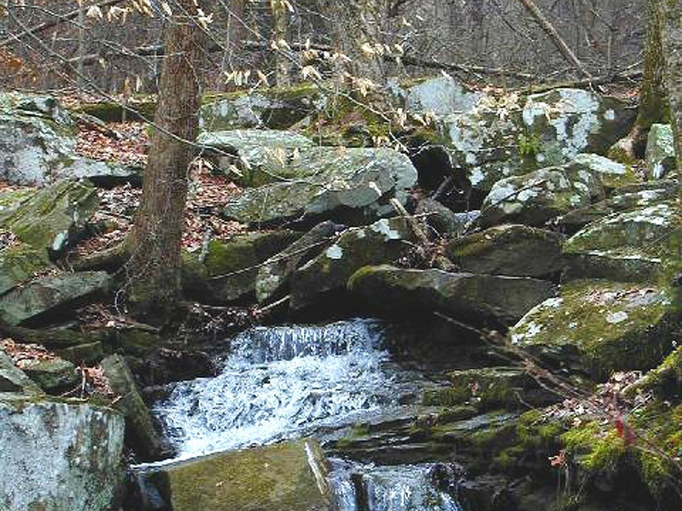

Mammoth Cave · Park lodge
Mammoth Cave Lodge
Rooms and cottages a short walk from the cave entrance.
Official details for Mammoth Cave LodgeCorvettes, caves and the longest cave on Earth.
Bowling Green builds every Corvette in the world, and the National Corvette Museum sits across from the plant. Thirty minutes north, Mammoth Cave National Park protects the longest known cave system on Earth, with more than 400 miles mapped. Land at Bowling Green, tour the museum, take a boat through Lost River Cave, and spend a day underground at Mammoth Cave.

In our plane it’s a short flight.
Where we’re staying Dinner Things to do The plan
I’ll handle the flight planning; you handle the fun planning!
Time illustration: direct distance at 150 KTAS plus 15 minutes for departure and arrival, matching the discovery page. Use ForeFlight for your actual flight plan.
Check the weekend weather at both ends → Flight category, your minimums and the crosswind on the best runway.
More in Aviation & getting around below. Crew cars change often: call the FBO before you go. How to have a rental car waiting at the FBO · Know something we missed? Tell us.
KBWG, Bowling Green–Warren County Regional, is a non-towered field with a 6,501-foot runway close to downtown.
Bowling Green–Warren County Regional Airport, Bowling Green, KY
Confirm FBO services and a rental car before you go. No live fuel price is shown.
Kentucky weather: summer haze and afternoon thunderstorms, valley fog on fall mornings, and low ceilings and icing in winter. About 420 nm from Myrtle Beach.
Rates and availability need travel dates. Book cave tours when you book your room.
Rooms and cottages a short walk from the cave entrance.
Official details for Mammoth Cave LodgeHotels and inns in Bowling Green.
Visit Bowling Green for More places to stayPrices and availability for your dates, through our partner Stay22. This is an affiliate link: we may earn a commission at no cost to you. The picks above are never paid.
Reserve weekend dinners.
Kentucky and New Orleans flavors downtown.
Official details for 440 MainRestaurants around the square and Fountain Row.
Visit Bowling Green for More restaurantsReserve cave tours ahead.
This prototype links to the local visitor site. It does not yet match events to your travel dates.
Corvette owners gather at the museum.
Corvette Museum for Museum anniversary weekendThe cave stays near 54°F all year.
NPS for Cave toursHardwoods along the Green River.
Visit Bowling Green for Fall colorCheck the local calendar when choosing a weekend, and confirm dates and tickets with the organizer.
A sample weekend. No bookings or availability confirmed.
Land at KBWG mid-morning.
The National Corvette Museum.
A boat ride at Lost River Cave, then back to the airport.
Land at KBWG, subject to weather and your actual flight plan.
The Corvette Museum.
Dinner at 440 Main.
A Mammoth Cave tour.
Hike the park’s surface trails.
Dinner at the lodge or in town.
A boat ride at Lost River Cave.
Return the car and allow time at the airport.
Afternoon thunderstorms build in summer; leave early.
A Mammoth Cave tour.
The park's surface trails.
Dinner at 440 Main.
These details make the difference between an appealing list and a usable getaway.
Cave tours first; they sell out.
About 420 nm: an easy nonstop.
Bring a jacket and good shoes; some tours have many stairs.
Year-round; spring and fall are best.
Picks and links reviewed by WingAway Weekends. Hours, prices, menus and availability change often, so confirm directly with each place before booking. Spotted something out of date, or have a favorite we missed? Email us at hello@wingawayweekends.com.
WingAway Weekends helps you discover the destination. Use ForeFlight and current official aviation information for route, performance, weather, NOTAMs and preflight decisions. Flight planning and PIC responsibility stay with the pilot.